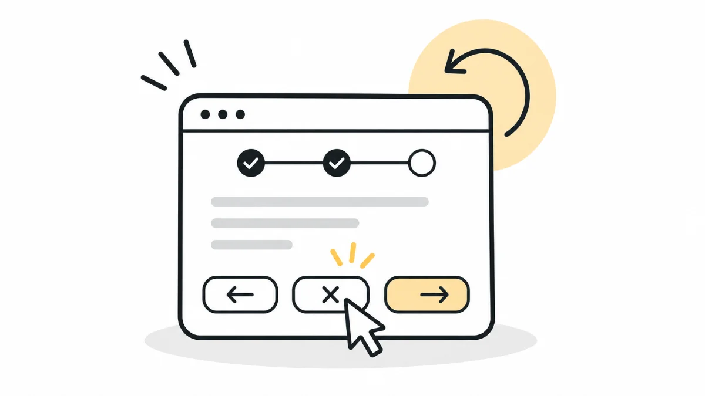

HeuristicsH3User Control and Freedom
Your users need a brake pedal
A car without brakes isn't a car, it's a trap. When users can't stop, undo, or exit freely, they don't feel in control. And without control, there's no trust.

Welcome back to my 10-week series on Nielsen's Usability Heuristics.
Over the last two weeks, we explored visibility and how important it is to make systems feel familiar to users. This week, let's talk about something equally important: giving users control.
This brings us to:
Heuristic #3: User Control and Freedom
Imagine driving without a brake
Imagine you're driving a car and someone tells you that you can use only the steering wheel and accelerator, but not the brake.
Would you feel safe? Would you even want to drive?
Probably not.
Because without the ability to stop, slow down or change direction, you wouldn't feel in control.
And where there's no control, there's no confidence.
The same thing applies to digital experiences.
Users should never feel trapped while using a product. They should always have the freedom to stop an action, go back or change their minds.
That's what User Control and Freedom is all about.
A real-world story: The furniture showroom with exit shortcuts
Recently, I visited one of the city's largest furniture and interior showrooms.
It had multiple floors, and visitors had to follow a pre-set path that guided them through different sections, from living room displays to kitchen setups, décor and lighting.
But here's something interesting I noticed.
There were short exit paths in between, built into the layout. So, if someone didn't want to continue or decided to leave early, they could take one of these shortcuts instead of walking through the entire showroom.
Now, imagine if those shortcuts weren't there.
What if you reached the middle of the showroom and suddenly realised that you didn't want to explore the remaining sections?
You'd have to walk through multiple sections just to find your way out.
Frustrating, right?
The same principle applies to digital products.
Imagine filling out a long form and suddenly deciding that you don't want to continue. Or opening a screen and realising that you've taken the wrong path.
Users should always have an easy way to cancel, go back or exit without being forced to complete a journey they no longer want to follow.
A personal story: That one message I really didn't want her to see
A few years ago, I accidentally forwarded a message on a chat app. One that was meant to be sent to her...
Yes, HER.
(And now, please stop imagining what the message could've been.)
The worst part? Back then, the app didn't have a "Delete for Everyone" option.
So there I was, panic-texting:
"Hey. That was sent by mistake... not for you... please ignore it..."
Uff. Awkward and exhausting.
But look at chat apps today.
You can delete a message after sending it. You can even edit it if you've made a mistake or noticed a typo.
Think about how useful these simple options are.
We all make mistakes. Sometimes we send something to the wrong person, select the wrong option or realise that we've made an error after completing an action.
A good product gives us a way to recover from those situations.
And that's exactly what User Control and Freedom is about: allowing users to correct their mistakes without unnecessary effort or embarrassment.
Control builds confidence
Whether it's a physical product or a digital one, users should always feel that they're in control.
They should be able to:
- Start or stop whenever they want.
- Undo actions easily.
- Navigate freely without feeling trapped.
A product that forces users into fixed flows or doesn't allow them to recover from mistakes will eventually create frustration.
Think about it. Nobody likes being forced to do something they don't want to do, especially when using a product.
Control isn't a luxury in UX. It's a necessity.
When users feel free to make choices, change their minds and correct mistakes, they feel more confident using the product.
And confident users are more likely to come back.
A concluding thought
A good product doesn't just guide users. It also gives them the freedom to back out, change their minds or fix their mistakes without fear.
Whether it's a simple back button, a cancel option, an undo action or the ability to delete a message, these small things make a big difference.
If your product respects the user's freedom to control their journey, it becomes a more comfortable and trustworthy experience.
Give your users control, and they'll trust your design.